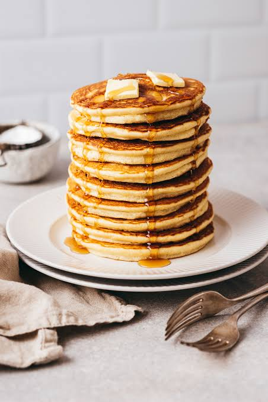

home
Pancakes

Description
Pancakes are a simple, fluffy breakfast staple made from a basic batter of flour, sugar, milk, eggs, and butter.
Cooked in a pan until golden on each side, they're soft and light on the inside with a slightly crisp edge.
They're versatile and delicious served with syrup, fresh fruit, butter, or any topping you like
Ingredients
- flour
- sugar
- baking powder
- pinch of salt
- milk
- eggs
- melted butter
Steps
- Mix flour,sugar,baking powder,and a pinch of salt in a bowl
- In another bowl, whisk milk,egg, and melted butter
- Combine wet and dry ingredients,stir until just mixed
- Heat a lightly greased pan over medium heat
- Pour batter to form pancakes,cook until bubbles form on top
- Flip,cook other side until golden
- Serve warm with syrup,butter,or other toppings